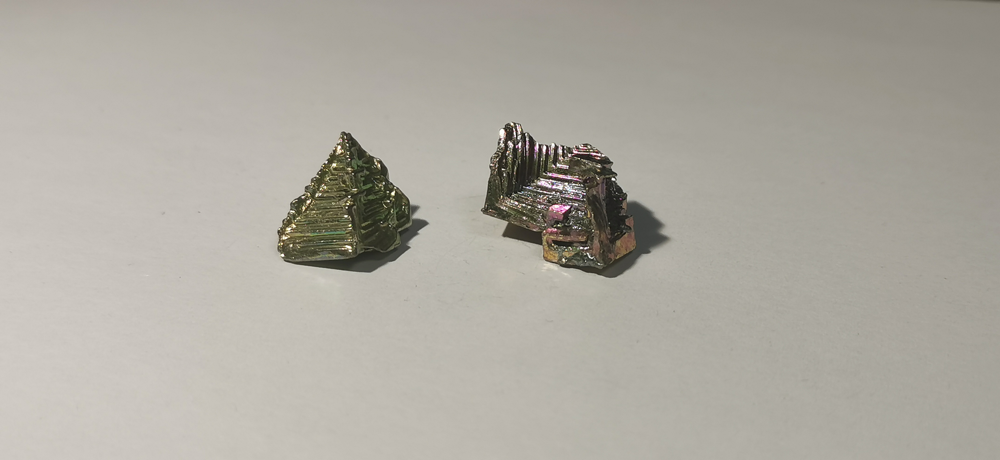
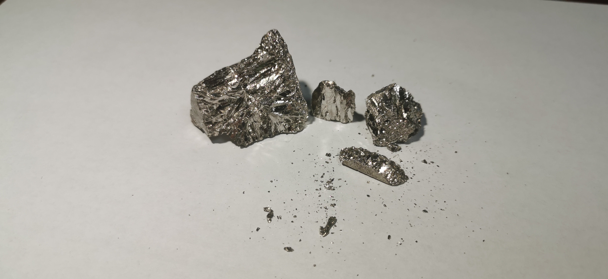

铋
2019.8 & 2020.1 小块铋晶体 来自冥灵
颜色：许多元素收藏者都是被铋晶体吸引入圈的（也许是彩虹铌也说不定呢）。这种彩色铋晶体的制备方法很简单，只要将铋在锅里加热至熔化，等待其自然凝固时就会被氧化膜覆盖。在冥灵处购物时通常会附赠小块铋晶体，我们很多人都很喜欢，从前我获得的一些铋晶体都送了同学，只留了最近的两个，一个浅绿色一个粉色。氧化铋很容易产生，去除氧化铋是工业上精炼铋的重要一步；在矿石上，由辉铋矿（Bi₂S₃）风化产生的氧化铋通常称为“铋华”，呈现黄色或绿色。
形状：铋在凝固结晶时往往就天然地会表现出这种阶梯状，这是由于铋凝固时体积的膨胀（约10/3）所致，锑也会有类似的性质。因此即使在无氧的环境下使其凝固，虽然不会出现各种彩色，但也能表现出类似的形状，而且银白色的铋晶体甚至更好看一些，这使一些更高端的收藏者倾向于收藏无氧化的铋晶体。
2020.1 金属铋 来自冥灵
我购买了原料铋决定自己试试制作铋晶体。